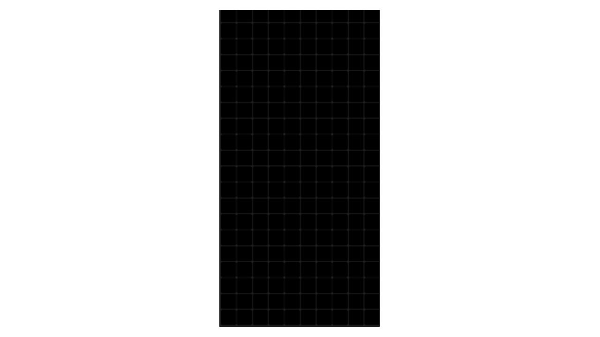

O Grze
Tetris – komputerowa gra logiczna stworzona przez Aleksieja Pażytnowa i jego współpracowników, Dimitrija Pawłowskiego i Wadima Gierasimowa [w innych językach]. Pojawiła się na rynku po raz pierwszy 6 czerwca 1984 roku w Związku Radzieckim. Oryginalna wersja powstała podczas pracy zespołu Pażytnowa w Akademii Nauk ZSRR w Moskwie na komputerze Elektronika 60 [w innych językach]. Jest to jedna z najbardziej znanych gier komputerowych, posiadająca dużą liczbę różnorodnych wariacji i wariantów. Do powstania gry zainspirowała Pażytnowa układanka Pentomino.
Oto jest muzyka z Tetrisa.
Rozgrywka
Gra rozpoczyna się na prostokątnej planszy (początkowo pustej) zwanej tetrionem lub matriksem, ułożonej krótszym bokiem w poziomie. Tetrion ma wymiary 20 wierszy na 10 kolumn. W trakcie gry, pośrodku górnej krawędzi planszy, pojawiają się pojedynczo klocki złożone z czterech małych kwadratów nazywanych też blokami.

Klocki te [określane mianem „tetrimino] przemieszczają się w kierunku dolnej krawędzi w miarę możliwości. Kiedy jedno tetrimino opadnie na samo dno, zostaje unieruchomione, a następne ukazuje się u góry planszy. Gra trwa aż do momentu, w którym klocek nie będzie mógł pojawić się na planszy. Zadaniem gracza jest układanie tetrimino na planszy (poprzez wykorzystanie rotacji i przesuwanie klocków w poziomie) w taki sposób, aby kwadraty składające się na nie utworzyły wiersz na całej szerokości prostokąta. W takiej sytuacji wiersz ten zostaje usunięty, a pozostałe klocki opadają w kierunku dna, tworząc więcej przestrzeni dla następnych elementów. Po usunięciu określonej liczby wierszy prędkość gry wzrasta o pół sekundy, co utrudnia tym samym precyzyjne sterowanie kolejnymi tetrimino.

Możliwe jest jednoczesne usunięcie maksymalnie 4 wierszy – umożliwia to tetrimino „I”. Sytuacja taka nosi nazwę identyczną jak gra, czyli „tetris”.
Ciekawostki
Tetris, gra uznawana za nie możliwą do przejścia, została pobita w 2023 przez 13 letniego Wllis'a "Blue Scuti" Gibson'a. Korzystając z błędu w kodzie gry, który sprawiał, że gra wyłączała się po zrobieniu pewnej kombinacji klocków, na pewnym poziomie gry [na wygranej próbie poziome 157] przeszedł Tetrisa. Było to coś co przedtem umiała zrobić tylko sztuczna inteligencja - co ciekawe, zrobił to tylko w 38 minut.